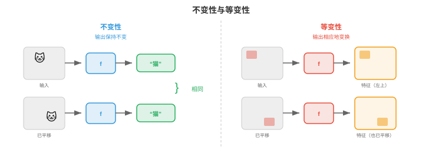
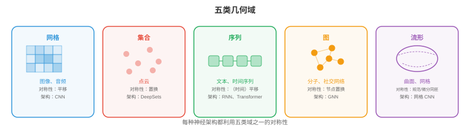

几何深度学习¶
几何深度学习是一个统一框架，它揭示 CNN、Transformer 和 GNN 都是同一原则的实例：利用对称性。本节介绍对称群、群作用、不变性、等变性、五类几何域和尺度分离。
- 在本书中，我们已经学习了许多架构：用于图像的 CNN（第 8 章）、用于语言的 Transformer（第 7 章），以及用于序列决策的强化学习策略（第 6 章）。它们看起来像是为完全不同问题设计的完全不同模型，但其中存在更深的模式。
大白话
这些模型表面上各做各的事，但它们都在利用数据里某种“换个表示方式，核心内容不变”的规律。
- 几何深度学习（geometric deep learning）揭示了这些架构都是同一思想的实例：构建尊重数据对称性（symmetries）的网络。CNN 利用图像中的平移对称性；Transformer 利用序列中的置换对称性，注意力不依赖绝对位置；GNN 利用图中的置换对称性。一旦看见这一点，纷繁的架构就成为一个连贯统一的框架。
大白话
几何深度学习的核心是：先找出数据怎样变化不会改变问题，再让网络天生遵守这个规律，而不是让它从大量样本里反复猜。
对称性与群¶
- 一个对象的对称性（symmetry）是使对象保持不变的变换。正方形有 8 种对称：4 次旋转，0°、90°、180°、270°，以及 4 次反射。圆有无限多种：绕圆心的任意旋转。关键洞见是，对称性告诉你什么并不重要；而知道什么不重要，对学习极具威力。
大白话
对称性就是“换个姿势，还是同一个东西”。知道哪些变化可以忽略，模型就不用为每一种摆放方式都重新学一遍。
- 用机器学习的语言说：如果一个任务具有某种对称性，那么无论模型看到输入的哪种“版本”，都应给出相同答案。无论猫在图像左上角还是右下角，猫检测器都应正常工作。这就是平移对称性。
大白话
猫从画面左边移到右边，答案仍然应该是“猫”。模型不应把位置变化误当成类别变化。
-
对称性被形式化为群（groups）。一个群 \(G\) 是具有四个性质的变换集合：
-
封闭性（Closure）：组合两个变换得到的仍是集合中的变换。旋转 90° 后再旋转 90° 得到 180°，它也在集合中。
大白话
规则里的任意两次合法操作连起来，结果仍然是合法操作。 - 结合性（Associativity）：\((g_1 \circ g_2) \circ g_3 = g_1 \circ (g_2 \circ g_3)\)。分组顺序无关紧要，回顾第 2 章的矩阵乘法结合性。
大白话
三个变换的先后顺序固定时，先算哪一对不会改变最后结果。 - 单位元（Identity）：存在一个“不做任何事”的变换 \(e\)，使得 \(e \circ g = g \circ e = g\)。
大白话
单位元就是“什么也不改变”的操作，和任何变换组合都不会添乱。 - 逆元（Inverse）：每个变换都有一个撤销操作：\(g \circ g^{-1} = e\)。
大白话
每个操作都有一个能把它完全撤销的反向操作，就像向右走后向左走回来。
-
大白话
这四条性质把“可组合、可撤销的变换”组织成一个可计算的体系。
- 这些公理与第 1 章向量空间的公理相同，只是这里处理的是变换而不是向量。联系很深：群作用于向量空间，而这种作用正是神经网络必须尊重的对象。
大白话
向量空间研究的是怎样加向量，群研究的是怎样组合变换；两者结合后，就能描述“变换作用在数据上”这件事。
-
深度学习中出现的关键群包括：
-
平移群（Translation group） \((\mathbb{R}^n, +)\)：移动图像或信号。这是 CNN 利用的对称性。
大白话
把图像整体挪动，图像中的局部规律仍然存在，这正是卷积共享滤波器的依据。 - 对称群（Symmetric group） \(S_n\)：\(n\) 个元素的全部置换。这是 GNN 和 Transformer 利用的对称性，重排节点或词元不应改变结果。
大白话
只要元素之间的关系没变，给节点或词元换编号不应改变整体答案。 - 旋转群（Rotation group） \(SO(n)\)：\(n\) 维空间中的全部旋转。\(SO(2)\) 是平面旋转，\(SO(3)\) 是三维旋转，对分子任务和三维视觉任务至关重要。
大白话
物体转个方向仍是同一个物体；模型若能尊重旋转，就不必为每个朝向单独训练。 - 欧几里得群（Euclidean group） \(E(n)\)：全部旋转、反射与平移，即物理空间的对称性。
大白话
这里把平移、转动和镜像反射都算作允许的空间变化。 - 特殊欧几里得群（Special Euclidean group） \(SE(n)\)：旋转与平移，不含反射，即刚体运动的对称性。
大白话
\(SE(n)\) 描述刚体真正移动和转动的方式，不把镜像翻转混进来。
-
-
群作用（group action）描述群如何变换数据。若 \(G\) 是群、\(X\) 是数据空间，则作用 \(\rho: G \times X \to X\) 将每个群元素 \(g\) 和数据点 \(x\) 映射为变换后的点 \(\rho(g, x)\)。对于图像，平移群通过移动像素坐标作用；对于图，对称群通过重命名节点作用。
大白话
群作用就是明确写出“某种变换怎样作用到某个数据上”。例如把图像像素挪位置，或给图节点重新编号。
不变性与等变性¶
- 给定一个对称群，函数与它之间有两种重要关系：
大白话
接下来只需要区分两种情况：变换输入后答案不变，或者答案跟着输入一起按规则变化。
- 若输入被变换时输出不变，则函数 \(f\) 对群 \(G\) 是不变的（invariant）：
大白话
输入怎么换，函数结果都一样。这适合分类这类只关心“是什么”、不关心“在哪里”的任务。
- 例如，平移图像不会改变图像的总亮度。图像分类应当对平移不变：无论猫位于何处，类别“猫”都相同。
大白话
猫在左上角还是右下角，分类结果都应是同一个类别；位置不是这个任务要回答的信息。
- 若变换输入会以相应方式变换输出，则函数 \(f\) 对 \(G\) 是等变的（equivariant）：
大白话
输入移动多少，输出就按对应规则移动多少。模型不是丢掉位置，而是用一致的方式传递位置变化。
- 例如，若将图像向右平移 5 个像素，CNN 中的特征图也会向右平移 5 个像素。卷积运算对平移等变，它保留空间关系。目标检测应当等变：猫移动时，边界框也应随之移动。
大白话
图像里的猫向右挪，特征图和边界框也向右挪；这样网络既认出猫，又保留它在画面中的位置。

- 这一区别很重要：中间层（intermediate layers）通常应当等变，以为下游层保留结构；而最终输出（final output）应当不变，答案不应依赖变换。CNN 通过堆叠等变卷积层，再在最后应用不变的全局池化来实现这一点。
大白话
中间过程要保留“东西在哪里、怎样排列”，最后分类时再把无关位置因素汇总掉。
- 将等变性内建到架构中，远比从数据中学习它高效。具有权重共享的平移等变 CNN 所需参数远少于全连接网络；后者必须分别学习“位置 (10,10) 的猫”和“位置 (200,150) 的猫”。对称性约束会指数级缩小假设空间。
大白话
把规律直接写进网络，就不用靠数据把同一规律重复教很多遍，因此参数更少、样本需求也更低。
五类几何域¶
- 几何深度学习识别出数据的五个基本域（five fundamental domains），每一个都有自己的对称群。每种神经网络架构都可理解为利用其中一个域的对称性。
大白话
数据的组织方式不同，对称性也不同；选网络前先判断数据属于哪种几何域。

- 1. 网格（Grids，欧几里得数据）：图像、音频频谱图、体数据。底层结构是具有平移对称性的规则网格。其群是平移群，也可能包含旋转和反射。利用这种对称性的架构是 CNN：卷积正是对平移等变的运算。空间位置之间的权重共享，是平移等变性的具体体现。
大白话
网格数据像整齐排成行列的像素。卷积在每个位置使用同一套小滤镜，所以图案换位置后仍能被同样识别。
- 2. 集合（Sets，无序集合）：点云、粒子系统。其对称性是置换不变性，元素顺序无关紧要。架构是 DeepSets，以及第 8 章的 PointNet：先对每个元素应用共享函数，再用置换不变运算，如求和、均值或最大值，进行聚合。形式上，\(f(\{x_1, \ldots, x_n\}) = \phi\left(\sum_i \psi(x_i)\right)\)。
大白话
集合只关心有哪些元素，不关心排列顺序。每个元素先用同一个函数处理，再求和或取最大值汇总。
- 3. 序列（Sequences，有序数据）：文本、时间序列。序列是一个一维网格，但有一个变化：其对称性更微妙，绝对位置可能重要，也可能不重要。RNN 自回归地处理序列。带位置编码的 Transformer 可以关注任意位置，其自注意力在加入位置编码之前对置换等变。这正是 Transformer 泛化能力强的原因：它从置换等变出发，只加入恰好足够的位置结构。
大白话
序列的顺序通常有意义，“我爱你”和“你爱我”不是一回事。Transformer 先用不依赖顺序的注意力处理内容，再用位置编码补回顺序信息。
- 4. 图（Graphs，关系数据）：社交网络、分子、知识图谱。其对称性是节点置换：重命名节点不应改变图的属性。对应架构是 GNN：在相连节点之间传递消息，使用不依赖节点排序的共享函数。这是本章余下部分的重点。
大白话
图数据最重要的是“谁和谁相连”。节点编号换了但连接关系没变，图表达的事实也不应改变。
- 5. 流形与网格曲面（Manifolds and meshes）：曲面、三维形状。对称性包含微分同胚，即平滑形变。架构使用由曲面自身几何定义的内蕴算子，例如 Laplace-Beltrami 算子，而不依赖曲面如何嵌入空间。这与微分几何相连，适用于形状分析、球面上的气候建模和蛋白质表面分析。
大白话
曲面可以弯曲、换一种姿势嵌入空间，但它自身的邻接和几何关系仍在。内蕴方法直接利用曲面本身，不依赖拍摄角度。
- 该框架的力量在于统一性。CNN 是网格图上的 GNN；Transformer 是完全连接图上的 GNN；DeepSets 是没有边的 GNN。把它们看作同一原则的实例，有助于设计新架构：识别数据的对称性，再构建尊重它的网络。
大白话
CNN、Transformer、DeepSets 和 GNN 可以看成同一套“按关系传递信息”的不同特例。设计新模型时，先找关系和对称性，比先背模型名字更重要。
尺度分离与粗化¶
- 现实数据在多个尺度上具有结构。图像有细粒度纹理，即像素层面；局部模式，如边与角；物体部件，如车轮与窗户；以及全局结构，即整个场景。分子也有原子级特征、官能团和整体分子形状。
大白话
同一个对象既有很小的细节，也有较大的部件和整体形状。只看一个尺度，信息一定不完整。
- 尺度分离（scale separation）是指这些细节层次可以分层处理：先捕捉局部结构，再逐步聚合为更粗的表示。这称为粗化（coarsening）或池化（pooling）。
大白话
先看像素和邻居，再把它们合成边、部件和整体，就像先看字词，再理解句子和文章。
- 在 CNN 中，池化层，如最大池化和平均池化，会下采样空间分辨率，迫使更高层捕捉更大尺度的模式。按照第 8 章的感受野视角，更深层“看到”图像中更大的范围。这就是尺度分离的实际作用。
大白话
池化会减少图像尺寸，让后面的层少纠结细小位置差异，转而关注更大范围的形状和结构。
- 在图中，粗化意味着把节点群聚为“超节点（supernodes）”，产生保留本质结构的较小图。这就是图池化，第 3 节会详细介绍。它与图像池化直接类比：在保留重要特征的同时降低分辨率。
大白话
图池化把关系相近的一群节点合成一个“超节点”，让图变小但尽量保留关键关系。
- 在序列中，层次处理，如句子 → 段落 → 文档，捕捉不同时间尺度或语义尺度的结构。第 8 章的 Swin Transformer 通过其移位窗口层次将这一思想用于图像。
大白话
序列也可以从局部片段逐层合成更大的单位，例如词组成句子、句子组成段落。
- 在数学上，粗化定义了一个日益抽象的表示层次（hierarchy of increasingly abstract representations）：
大白话
这个箭头表示信息从局部特征逐层压缩成全局表示：越往后越抽象，但也越接近最终任务答案。
- 在每一层，表示对该层的对称群等变。最终全局表示是不变的：它捕捉输入本质，而不对无关变换敏感。
大白话
中间层仍然跟着结构变化，最后汇总出的结果则忽略不重要的摆放、编号或姿态变化。
- 这层层次结构解释了深度网络为何比浅层网络更适合结构化数据：每一层增加一个抽象层次，许多等变层的复合从简单局部特征建立复杂不变特征。
大白话
深度的价值不只是层数多，而是能一层层把简单关系组合成复杂概念，最后得到稳定的整体判断。
编程任务（使用 CoLab 或 Notebook）¶
-
验证卷积的平移等变性。先对图像应用卷积，再平移图像并重新卷积。检查两个输出是否互为平移版本。
import jax import jax.numpy as jnp # 1D signal and a simple filter signal = jnp.array([0, 0, 0, 1, 2, 3, 2, 1, 0, 0, 0], dtype=float) kernel = jnp.array([1, 0, -1], dtype=float) # Convolve then shift conv_result = jnp.convolve(signal, kernel, mode="same") shifted_signal = jnp.roll(signal, 3) conv_shifted = jnp.convolve(shifted_signal, kernel, mode="same") shifted_conv = jnp.roll(conv_result, 3) print(f"Conv then shift: {shifted_conv}") print(f"Shift then conv: {conv_shifted}") print(f"Equivariant: {jnp.allclose(shifted_conv, conv_shifted, atol=1e-5)}") -
验证 DeepSets 风格聚合的置换不变性。对集合的每个元素应用共享函数，求和结果，并检查无论元素顺序如何，输出是否相同。
import jax import jax.numpy as jnp # A "set" of 4 vectors (order should not matter) x = jnp.array([[1.0, 2.0], [3.0, 4.0], [5.0, 6.0], [7.0, 8.0]]) # Simple shared function: element-wise square psi = lambda v: v ** 2 # Aggregate by sum def deepsets(points): return jnp.sum(jax.vmap(psi)(points), axis=0) # Original order result1 = deepsets(x) # Permuted order perm = jnp.array([2, 0, 3, 1]) result2 = deepsets(x[perm]) print(f"Original order: {result1}") print(f"Permuted order: {result2}") print(f"Invariant: {jnp.allclose(result1, result2)}") -
探索群结构。通过检查封闭性、结合性、单位元和逆元，验证二维旋转矩阵构成一个群。
import jax.numpy as jnp def rot2d(theta): return jnp.array([[jnp.cos(theta), -jnp.sin(theta)], [jnp.sin(theta), jnp.cos(theta)]]) R1 = rot2d(jnp.pi / 6) R2 = rot2d(jnp.pi / 4) R3 = rot2d(jnp.pi / 3) # Closure: product of two rotations is a rotation R12 = R1 @ R2 print(f"Closure (det=1, orthogonal): det={jnp.linalg.det(R12):.4f}, " f"R^T R = I: {jnp.allclose(R12.T @ R12, jnp.eye(2), atol=1e-5)}") # Associativity print(f"Associative: {jnp.allclose((R1 @ R2) @ R3, R1 @ (R2 @ R3), atol=1e-5)}") # Identity I = rot2d(0.0) print(f"Identity: {jnp.allclose(R1 @ I, R1, atol=1e-5)}") # Inverse R1_inv = rot2d(-jnp.pi / 6) print(f"Inverse: {jnp.allclose(R1 @ R1_inv, jnp.eye(2), atol=1e-5)}")